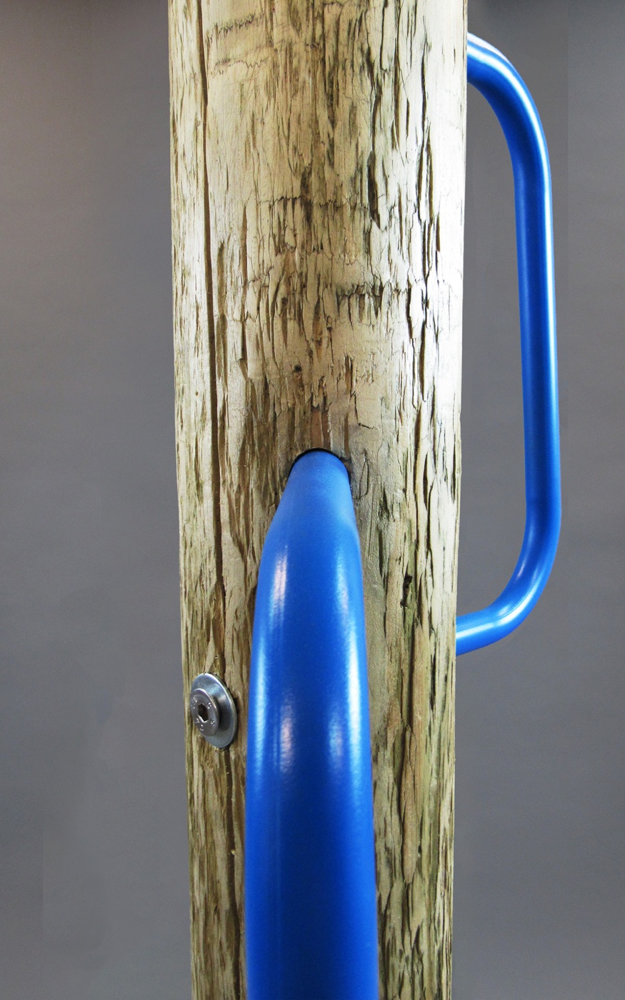
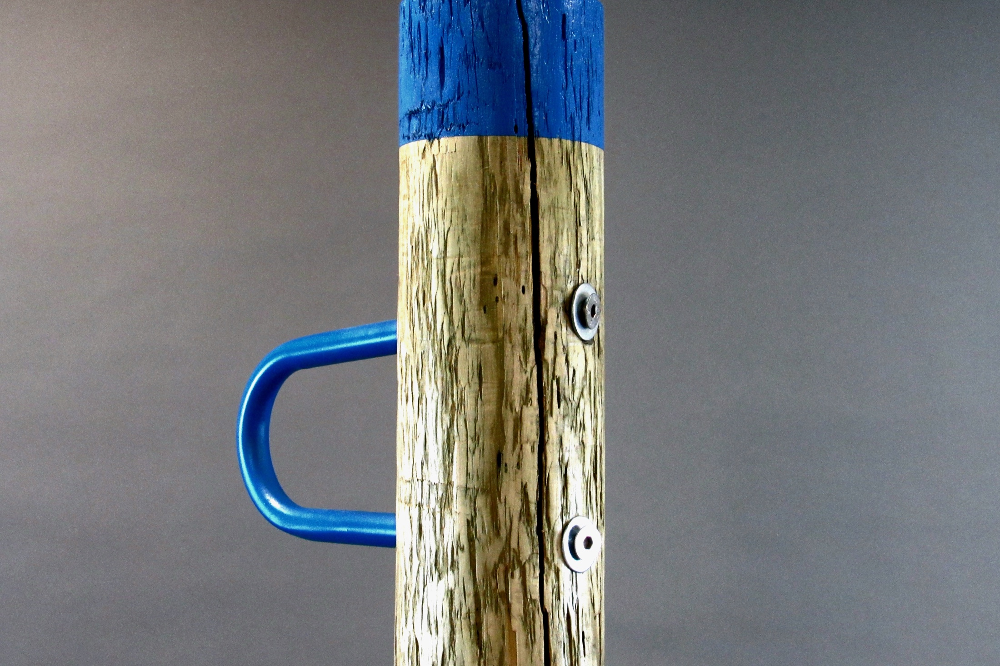

Soporte para la contemplación elevada en entorno natural local: un diálogo constructivo entre tronco de madera natural en bruto y acero tubular continuo azul cobalto.
DocumentaciónMaqueta de estudio y dibujo técnico 1:14
[01 · IDEA Y EMPLAZAMIENTO]
Habitar la altura sin invadir
El encargo interroga cómo detenerse en un paisaje natural ofreciendo un punto de apoyo elevado que no compita con el entorno mediante masas cerradas ni cimentaciones invasivas.
El poste de madera en su geometría orgánica actúa como columna central; alrededor de él se enlaza un único recorrido tubular continuo azul cobalto que resuelve peldaños, agarres y apoyos de descanso.
[02 · PLANIMETRÍA Y ESCALA]
Lectura constructiva Escala 1:14
Vistas técnicas: Desarrollo ortogonal frontal, lateral y superior en escala 1:14 para estudiar radios de curvatura y puntos de abrazo sobre el tronco.
Contraste material: Textura irregular de la corteza frente a la precisión industrial y lectura cromática de alto contraste del azul cobalto en paisaje verde.
Maqueta y ángulos constructivos
Clic para ampliar cada vista

Encuentro estructural · Curvatura vertical del tubular

Detalle de madera · Textura orgánica y color cobalto